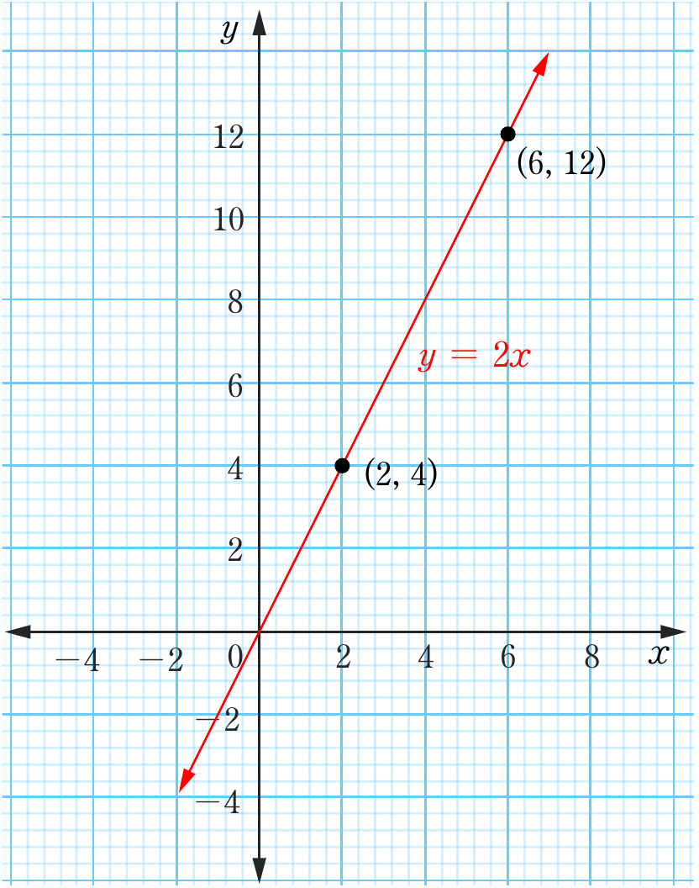

7. (a)

(b) (i) Gradient is 2 which signifies that 2 acres farm uses 1 bag of fertilizer
(ii) and x and y-intercepts are (0, 0)
(c) (i) Nyanda will need 12 bags of fertilizer
(ii) The size of Myoma farm is 150 acres
Exercise 6.4
1.
(a)
(b)
(c)
(d)
(e)
3.
(a)
(b)
(c)
(d)
5.
(a) , and
(b) , and
(c) , and
(2, 4)(6, 12)xyy = 2x